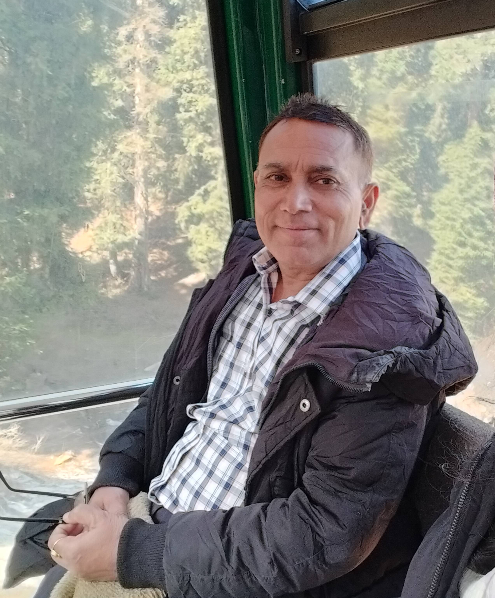

Laxman Damodar Netak
Professor
- Artificial Intelligence
- Brain Computer Interface (EEG)
- Geospatial Data Analysis (GIS)
- Learning Analytics
- Hyperspectural Image Processing
Department of Computer Engineering
Dr. Babasaheb Ambedkar Technological University, Lonere - 402 103
Raigad, India
About Me
Laxman Damodar Netak is a Professor in the Department of Computer Engineering at Dr. Babasaheb Ambedkar Technological University (DBATU), Lonere, India. His research interest in the broad areas of Computer Science and Engineering, such as Geospatial data analysis, Brain-computer interface, Virtual and augmented reality, Machine learning, and Learning analytics. He holds a B.E. in Computer Science and Engineering from Govt. Engineering College, Chatrapati Sambhaji Nagar (Aurangabad) in 1995, and M.Tech in Computer Engineering from Dr. Babasaheb Ambedkar Technological University, Lonere Raigad (MS) in 2003, and a Ph.D. from Dr. Babasaheb Ambedkar Technological University (2016).